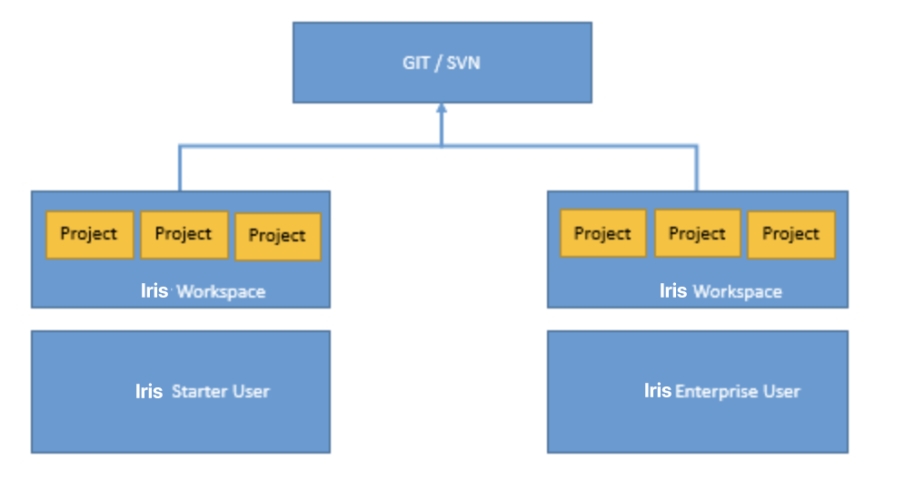

Volt MX Studio Equivalents in Volt MX Iris
The Volt MX Studio product line has evolved to a new user interface and expanded functionality in Volt MX Iris. In addition to its many new and improved features, virtually all of the same functionality is available, but many of those familiar Volt MX Studio features are accessed differently in Volt MX Iris. This topic shows you how to accomplish in Volt MX Iris what you are familiar with doing in Volt MX Studio.
Note: In Volt MX Studio 6.5, you could port a project from one platform to another, and to channels within the target platform. However, issues would arise due to the wide variations in form factors from one platform and channel to another. In Volt MX Iris, universality across platforms and channels is achieved through the use of components and masters; platform porting is not supported in Volt MX Iris. For more information, See Working with Components, HCL Forge , and Masters. .
Feature Locations
The following table outlines where different features are located in the respective user interfaces of Volt MX Studio and Volt MX Iris.
| Feature | Kony Studio | In Volt MX Iris |
| Application assets | Navigator View → <App Name> | Project Explorer → Assets tab |
| Clone All | Skins View → Clone All icon | Project Explorer → Skins tab → <widget type> → right-click <skin name> (e.g. btnFocus) → Fork |
| Collections | N/A | Library Explorer → Collections |
| Custom Widgets | Navigator View → <App Name> → customwidgets | VoltMX IrisLibrary pane →Widget tab → Custom Widget section |
| Emulators (configure) | Emulators View → <Platform> → <Channel> → right-click emulator → Edit | Product menu → Emulators & Devices Configurationor Window menu → Preferences → VoltMX Iris → Emulators |
| Emulators (display) | Window menu → Show View → Emulators | Preview menu → Launch Emulator |
| Events/Actions | Events are added and edited by selecting a widget and then navigating to the Event section in the Widget Properties View | Global actions can be created and accessed from Project Explorer → Project tab → <Channel>, and open in the Action Editor Actions created for a specific widget are accessed by selecting the widget, followed by Properties Editor → Action tab |
| Flex Properties | Flex Properties View | Properties Editor → Look tab → Flex section |
| Font (change) | Skins view → navigate to widget type → navigate to channel and platform → double-click → Font tab | Select widget → Properties Editor → Skin tab → Fonts section |
| Fork a Skin | Skins View → <widget type> → right-click <skin name> (e.g. btnFocus) → Fork | Project Explorer → Skins tab → <widget type> → right-click <skin name> (e.g. btnFocus) → Fork or Properties Editor → Skin tab → General section → Platform ellipsis button→ Select platforms → OK |
| Forms | Applications View → <App Name> → forms | Project Explorer → Project tab → <Channel> → Forms |
| Hierarchical view of forms and widgets | Outline view | Project Explorer → Project tab |
| Images | Applications View → resources | Project Explorer → Assets tab |
| Modules | Applications View → <App Name> → modules | Project Explorer → Project tab → Modules |
| Offline Services | Applications View → <App Name> → offline services | Set up as a service on VoltMX Foundry that is then synced locallyProject Explorer → VoltMX Foundry |
| Popups | Applications View → <App Name> → popups | Project Explorer → Project tab → <Channel> → Popups |
| Projects/Applications | Multiple applications can be open at one time | Only one project can be open at a time |
| Review/Comments | Not Available | Properties Editor → Review tab |
| Search (forms, widgets, and skins) | Search menu → Search | Project Explorer → Search tab |
| Search (modules) | Search menu → Search | Edit menu → Find/Replace (Search in VoltMX Iris) |
| Services in use by the application | Applications View → <App Name> → servicesAlso:The Services View | Project Explorer → VoltMX Foundry |
| Skins | The Skins view | Project Explorer → Skins tab |
| Splash Screen | File → Application Properties → Splash Screen tab | Opened from Project Explorer → Project tab → <Channel>, and once opened, configured from Properties Editor → Splash Screen tab |
| Templates | Applications View → <App Name> → templates | Project Explorer → Templates tab → Components |
| Themes | The Skins view → Theme drop-down list | Project Explorer → Skins tab → Theme drop-down list |
| Web_module | Applications View → <App Name> →web_module | Handled as a part of services in the VoltMX Foundry Console Project Explorer → Project tab → VoltMX Foundry |
| Widgets | Widgets Palette | Library Explorer → Widgets tab |
| Widget Properties | Widget Properties View | Properties Editor |
Service Definition
The following table outlines where service definition features are located in the respective user interfaces of Volt MX Studio and Volt MX Iris.
| Feature or Task | In Volt MX Studio | In VoltMX Iris |
| Access and edit service definitions | Right-click app name in the Applications View, and then click Open Service Definition | Project Explorer → Project tab → VoltMX Foundry → Integration → Configure New button or Use Existing button |
| Sync Configuration | Window menu → Show View → Other → Volt MX Studio → SyncConfiguration | Project Explorer → Project tab → VoltMX Foundry → Synchronization |
Form Editor
The following table outlines where various form editing features are located in the respective user interfaces of Volt MX Studio and Volt MX Iris.
| Feature or Task | In Volt MX Studio | In VoltMX Iris |
| Create a new form | Applications View → <App Name> → forms → right-click <channel> → New Flex Form | Project Explorer→ Project tab → <channel> → right-click Forms → New Form → Flex Form |
| Form editing | Uses the Form Designer | Uses the Iris Canvas |
| Mapping Editor | Open the Event Editor → right-click Action Sequence → select to invoke a service, navigate to a form, or add mapping → Open Mapping Editor | Open the Action Editor → open an Action Sequence → right-click an action → Open Mapping Editor |
| Open a form | Applications View → <App Name> → forms → <channel> → double-click form | Project Explorer→ Project tab → <channel> → click Forms arrow → Click Form |
| Quick Preview | Click Preview in the Form Designer → select the platform and channel → open Emulators View → right-click emulator → click Open in Preview | The Iris Canvas is always in preview mode. From the drop-down lists at the top of the canvas, select the platform, channel, and device you want |
| Side-by-Side view | Not available | Window menu → Arrange → Side By Side |
| Toggle BVR (beyond visible range)Toggles between limiting what's viewable on the canvas to what a user would see on the screen, and displaying all application elements of a form, regardless of their position | Not available | On the Iris Canvas, click BVR to place and view application items beyond what's visible on the device screen. Click BVR again to limit the canvas display to the device screen To pan in BVR mode, you can press the space bar and drag. |
| Toggle OrientationToggles the device preview between portrait and landscape orientations | Not available | At the top of the Iris Canvas, click the Toggle Orientation icon |
| Toggle ShellToggles the device preview between displaying just the screen, and displaying the device's shape and dimensions beyond the screen | Not available | At the top of the Iris Canvas, click the Toggle Shell icon |
Authentication and Licensing
In Volt MX Studio, you were prompted for authentication and licensing when Volt MX Studio started. With Volt MX Iris, you are prompted for authentication and licensing when you first build a project, giving you the ability to use Volt MX Iris offline.
Best Practices for using GIT and SVN Repositories
In your development streams, we recommend the following best practices in coordinating the use of both Volt MX Iris and Volt MX Iris Classic.
- Since both editions of Volt MX Iris use the same file format, they can share a common GIT or SVN repository.
- You should maintain separate workspaces for Volt MX Iris projects and Volt MX Iris Classic projects.
To illustrate, your workspace work flow should look like this:

Import and Export
The following table outlines how import and export features function in the respective user interfaces of Volt MX Studio and Volt MX Iris.
| Feature or Issue | In Volt MX Studio | In VoltMX Iris |
| File Format Compatibility | Since Volt MX Studio used the .kl file format and Iris uses the JSON file format, moving a project between one and the other required converting between the two formats, resulting in inconsistencies | Both VoltMX Iris: VoltMX Iris and VoltMX Iris Classic: VoltMX Iris Classic uses the JSON file format for seamless importing and exporting of projects between the two. |
| Importation of actions from earlier versions of Iris | When imported into Volt MX Studio, did not copy the actions of projects made with earlier versions of Iris | The "Designer Actions" created in earlier versions of VoltMX Iris, when imported into VoltMX Iris Classic, are replicated as "Developer Actions" for seamless integration and optimal functionality |
| Imported Assets | Imported project is copied by reference but is not actually added to the workspace | Imported project is copied to the workspace |
Using Skins
The following table outlines differences in how skins are used in the respective user interfaces of Volt MX Studio and Volt MX Iris.
| Feature or Task | In Volt MX Studio | In VoltMX Iris |
| Assigning skins | Assigned from the Widget Properties through a multi-click process | Assigned from the Skin tab of the Properties Editor for improved work flow |
| Common skins vs. widget-specific skins | Widgets, when added, automatically assume the default, common skin. | Widgets, when added, are automatically assigned their own unique, widget-specific skin |
Utilities
The following table describes the differences in certain utilities between Volt MX Studio and Volt MX Iris.
| Feature | In Volt MX Studio | In VoltMX Iris |
| Build Diff Tool | Applications View → right-click App name→ Utilities → Launch Build Diff Tool | Deprecated. Obsolete in VoltMX Iris |
| Form Merge Tool | For comparing forms and porting elements from one form to another to create functional parity across forms | This tool is deprecated since any form can be easily duplicated |
| Manage Custom Fonts | Skin View → right-click skin → Edit → Font tab → Platform Specific Font Names | Copy fonts directly into the project's Fonts folder |
| Platform Porting | For porting an application created in one platform to another platform | Deprecated. With flex layouts, VoltMX Iris dynamically renders from one platform to another, and can be copied seamlessly to other channels |
Custom Widget Import
In Volt MX Studio, custom widgets could be exported as a .zip file and then imported into a different project. This functionality is not available in Volt MX Iris. As an alternative, you can add custom widgets. For more information, see Add Custom Widgets.
Code Editor
The following table illustrates a couple of the main differences in how the Code Editor functions between Volt MX Studio and Volt MX Iris.
| Feature or Task | In Volt MX Studio | In VoltMX Iris |
| Code outline | Displayed in a separate panel | Displayed inline |
| Syntax Highlighting | Partially supported | Supported for the following languages: C, C#, C++, CSS, HTML4, HTML5, Java, JavaScript, LESS, Objective C, Python, Ruby, Sass, SCSS, XML |
Search and Replace
In Volt MX Iris, you can search and replace code, and you can also jump to a code element's definition, such as a function. For more information, see Find and Replace and Jump to the Definition of a Code Element.
Local Preview
The following table outlines the differences in how previews are handled locally between Volt MX Studio and Volt MX Iris.
| Feature or Task | In Volt MX Studio | In VoltMX Iris |
| Functional Preview Requests | Handled by Jetty | Handled by the Node.js runtime environment |
| Publish Destination | VoltMXServer | VoltMX Foundry |
| Publish Model | Applications and services published individually | In VoltMX Foundry, you create a VoltMX Foundry app to which you add services that you publish. When you're ready to publish the VoltMX Iris app, you bind it to the VoltMX Foundry app that contains the services that you want to use. After publishing the VoltMX Iris app, it accesses the published VoltMX Foundryservices. |